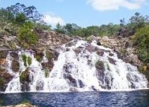
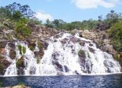

Tranquilidade e contato com a natureza no seu alcance
A região de Campos do Jordão é rica em roteiros deslumbrantes em que a natureza se mostra magnífica a todo instante. Quem passa por aqui, além de desfrutar das maravilhas da Serra da Mantiqueira, também poderá se deliciar com a rica gastronomia da cidade mais charmosa do Brasil.
Leia mais
A “Suíça brasileira” oferece atrativos em qualquer época do ano. Do turismo de aventura aos que buscam apenas tranquilidade, Campos do Jordão tem opções para todas idades, gostos e bolsos. Quer aproveitar todas essas maravilhas com conforto, lazer e ótimos preços? Venha se hospedar na Pousada Serra Verde!
Venha se hospedar na Pousada Serra Verde!
 


Entre em contato
Telefone: (12) 4321-1234
E-mail: atendimento@pousadaserraverde.tur.br
Estrada dos Pinheiros, Km 7,5
Campos do Jordão - SP